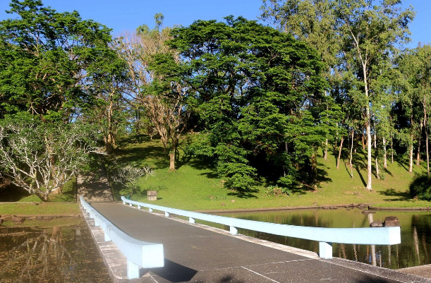
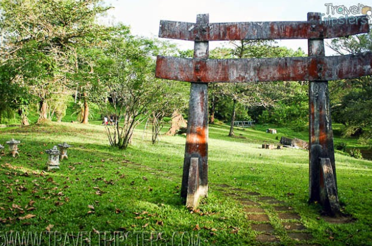

Laguna Japanese Garden
The Japanese Garden is one of many historical sites in Laguna. It is situated in Cavinti along the popular Lake Caliraya. This beautiful garden was constructed in the 1970s to commemorate the Japanese occupation of the Philippines in World War II. Philippines-Japan Friendship Society built the shrine to honor Japanese soldiers who lost their lives during World War II. It is also rumored that the Yamashita Treasure, alleged war loot stolen by Japanese forces during the war, is buried within the garden's grounds.
When you enter the grounds, you will be greeted by a large torii or a traditional Japanese gate. These gates are often placed in shrines or spots that hold religious significance to let visitors know that they are about to enter a sacred space. Past the gate, you will see open spaces of grass and towering trees that offer shade for those hoping to enjoy a picnic. Further on, you will find a still, man-made lagoon that adds to the overall tranquil atmosphere of the garden.
A cement bridge over the lagoon leads you to a tall set of stairs. At the top of these steps, you will find yourself in another spacious area of the garden where a solemn altar sits. The Along with the zen-like appeal of the garden, visitors can also climb a set of stairs to a hilltop. From here, you can get a panoramic view of Caliraya Lake, which is another well-known spot in Laguna.

Japanese Garden and Yamashita Shrine: Picnic Place and Solitary Wonder in Cavinti Laguna